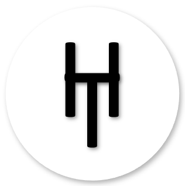

<!-- Toolbar -->
<mat-toolbar role="banner">
  <button class="menu" mat-icon-button *ngIf="sidenav.mode === 'over'" (click)="sidenav.toggle()">
    <mat-icon *ngIf="!sidenav.opened">
        menu
    </mat-icon>
    <mat-icon *ngIf="sidenav.opened">
        close
    </mat-icon>
  </button>
  
  <span>
    <a class="link-toolbar" routerLink="">Portfolio</a>
  </span>
  <div class="spacer"></div>
</mat-toolbar>

<mat-sidenav-container>
  <mat-sidenav #sidenav="matSidenav">
    
    <h4 class="name">Hutomo Khairinas</h4>
    <p class="designation">Beginner Web Developer </p>
    <div class="icon-profile" *ngFor="let item of btnLink">
      <a mat-icon-button href='{{ item.url }}' target="_blank" title='{{ item.title }}'>
        <mat-icon class="{{ item.class }}" aria-hidden="true"></mat-icon>
      </a>
    </div>
    <mat-divider></mat-divider>
    <div *ngFor="let l of menuLink">
      <a mat-button class="menu-button" [routerLink]=[l.url] >
        <mat-icon>{{ l.icon }}</mat-icon>
        <span>{{ l.title }}</span>
      </a>
    </div>
  </mat-sidenav>

  <mat-sidenav-content>
    <div class="content">
      <router-outlet></router-outlet>
    </div>
    <footer>
      <span>
        Made with <mat-icon class="icon">favorite</mat-icon>by Hutomo Khairinas @ 2021
      </span>
    </footer>
  </mat-sidenav-content>
</mat-sidenav-container>
